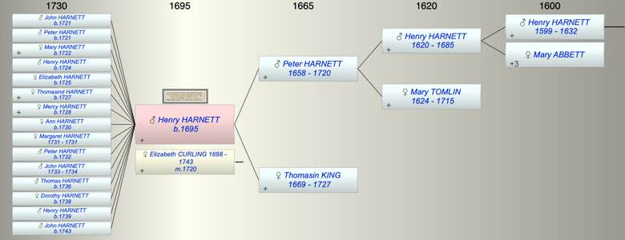

| [Index] |
| Henry HARNETT (1695 - ) |
|  |
| b. 1695 at St Laurence |
| m. 23 Jun 1720 Elizabeth CURLING (1698 - 1743) at St Laurence |
| Parents: |
| Peter HARNETT (1658 - 1720) |
| Thomasin KING (1669 - 1727) |
| Siblings (3): |
| James HARNETT (1702 - 1719) |
| Peter HARNETT (1706 - 1776) |
| Edward HARNETT (1708 - 1719) |
| Events in Henry HARNETT (1695 - )'s life | |||||
| Date | Age | Event | Place | Notes | Src |
| 1695 | Henry HARNETT was born | St Laurence | bap 26 Sep 1695 ex FMP PR | ||
| 1720 | 25 | Death of father Peter HARNETT (aged 62) | |||
| 23 Jun 1720 | 25 | Married Elizabeth CURLING (aged 22) | St Laurence | both of St Laurence ex FMP PR | |
| 1721 | 26 | Birth of son John HARNETT | St Laurence | Note 1 | |
| 1721 | 26 | Birth of son Peter HARNETT | St Laurence | Note 2 | |
| 1722 | 27 | Birth of daughter Mary HARNETT | St Laurence | Note 3 | |
| 1724 | 29 | Birth of son Henry HARNETT | St Laurence | Note 4 | |
| 1725 | 30 | Birth of daughter Elizabeth HARNETT | St Laurence | Note 5 | |
| 1727 | 32 | Birth of daughter Thomasind HARNETT | St Laurence | Note 6 | |
| 1727 | 32 | Death of mother Thomasin KING (aged 58) | |||
| 1728 | 33 | Birth of daughter Mercy HARNETT | St Laurence | Note 7 | |
| 1730 | 35 | Birth of daughter Ann HARNETT | St Laurence | Note 8 | |
| 1731 | 36 | Birth of daughter Margaret HARNETT | St Laurence | Note 9 | |
| 1731 | 36 | Death of daughter Margaret HARNETT | St Laurence | Note 10 | |
| 1732 | 37 | Birth of son Peter HARNETT | St Laurence | Note 11 | |
| 1733 | 38 | Birth of son John HARNETT | St Laurence | Note 12 | |
| 1734 | 39 | Death of son John HARNETT (aged 1) | St Laurence | Note 13 | |
| 1736 | 41 | Birth of son Thomas HARNETT | St Laurence | Note 14 | |
| 1738 | 43 | Birth of daughter Dorothy HARNETT | St Laurence | Note 15 | |
| 1739 | 44 | Birth of son Henry HARNETT | St Laurence | Note 16 | |
| 1743 | 48 | Birth of son John HARNETT | St Laurence | Note 17 | |
| 1743 | 48 | Death of wife Elizabeth CURLING (aged 45) | St Laurence | Note 18 | |
| Personal Notes: |
| Possibly married Mary Curling by licence 1 Jul 1745 see picture, given the marriage was at Lydden there may be a link to Peter Harnett of Lydden ba and Mary Curling of St L spinster at St L or Cant 2 Dec 1736 |
| Created on a Mac™ using iFamily for Mac™ on 8 Oct 2023 |